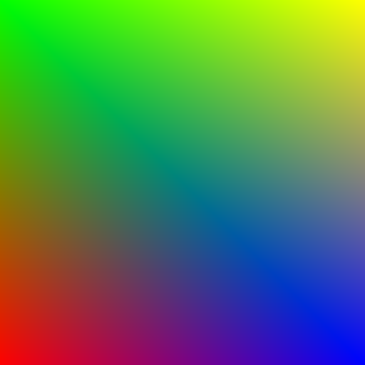

Getting Started - gloo#
The gloo layer of VisPy is the lowest level interface and is the closest thing to OpenGL that VisPy provides. This also means it is the most complicated. While OpenGL is complicated, gloo tries to provide a simple to use object-oriented layer on top of that. The guide below will walk through the basics of using VisPy’s gloo interface to create a visualization.
Getting System Information#
A good quick way of checking if VisPy is properly installed is to print out system information. This output includes information like what backends you have installed as well as information that can be gathered from OpenGL about your GPU. This can be very important information to provide to VisPy maintainers when filing bugs or asking questions. To get this information, you can run the following python code:
import vispy
print(vispy.sys_info())
Note
This can be done in a one-liner from the command line with:
python -c "import vispy; print(vispy.sys_info())"
The output of this should look something like the below, but will ultimately depend on your environment and your machine.
Platform: Linux-5.4.0-7642-generic-x86_64-with-debian-bullseye-sid
Python: 3.7.6 | packaged by conda-forge | (default, Mar 23 2020, 23:03:20) [GCC 7.3.0]
NumPy: 1.18.1
Backend: PyQt5
pyqt4: None
pyqt5: ('PyQt5', '5.12.3', '5.12.5')
pyside: None
pyside2: None
pyglet: None
glfw: None
sdl2: None
wx: None
egl: EGL 1.5 NVIDIA: OpenGL_ES OpenGL
osmesa: None
_test: None
GL version: '4.6.0 NVIDIA 455.28'
MAX_TEXTURE_SIZE: 32768
Extensions: 'GL_AMD_multi_draw_indirect ...'
One important thing to look for is the “GL version”. If you see an empty string here or got an error when running this command, this likely means your system’s OpenGL library is not properly installed or can’t be found by VisPy. You may need to upgrade or re-install your GPU drivers to fix this or OpenGL may not be compatible with your system.
The Canvas and The Application#
There are two things that are common across all of the VisPy interfaces in one way or another:
One
ApplicationinstanceAt least one
Canvas(or subclass) instance
The Application#
The VisPy Application object wraps the high-level event loop logic of
the VisPy backend you use (PyQt5, Wx, etc). In most cases you don’t have
to know too much about this, but you do need to create and run the
application which we’ll see below. If the application is not started, VisPy
will not be able to process events and won’t run properly. Note that just like
with any GUI framework, calling the .run() method of the application is
a blocking call. Nothing after the .run() call will be executed until the
application is stopped, usually by closing your GUI window.
The Canvas#
The Canvas object will be your main way of using and controlling VisPy.
Depending on the VisPy interface you’re using, you’ll either be using the
Canvas, SceneCanvas, or creating Figure objects. While these
different types of canvases are built on each other, they will almost never
be used in the same application. To help keep your code easy to understand
it is best not to mix these classes or their subcomponents.
Basic Script#
To start any gloo visualization we will need to create a Canvas object and
an Application. Here is the most basic working example we can create:
import sys
from vispy import app, gloo
canvas = app.Canvas(keys='interactive')
@canvas.connect
def on_draw(event):
gloo.set_clear_color((0.2, 0.4, 0.6, 1.0))
gloo.clear()
canvas.show()
if __name__ == '__main__' and sys.flags.interactive == 0:
app.run()
If you run the above code you should see a single window with a solid blue-ish background.
Let’s go through this code one chunk at a time:
We start out by importing the the sys module from the Python standard library followed by the vispy
appandgloomodules.We create a
Canvasobject representing the overall space where our visualization will take place.We define a simple “on_draw” function telling OpenGL to fill the Canvas with a specific RGBA (Red, Green, Blue, Alpha) color. The color components are defined as floating point numbers between 0 and 1. We use the
canvas.connectdecorator method to attach this method to any “draw” events coming from the canvas. When using this technique the function must be namedon_<event>. For more on the available events that can be connected to, see thevispy.app.canvas.Canvasdocstring.We call
canvas.show()to display the Canvas object on the screen. VisPy will talk to the underlying GUI backend (PyQt, Wx, etc) to construct a native GUI “widget” with our OpenGL visualization inside.The script ends with us running a default VisPy
Applicationobject. Later on we’ll see how we can define the exact Application we want to use, but in this early stage we won’t need to. The if statement here is a common occurrence in VisPy example scripts so that the Application is only started when the code is run as a script (instead of imported). This also helps with more advanced usage where we run this script in an interactive Python interpreter.
Note
The above code is also available in the examples/gloo/start.py script.
Basic Script (Alternative)#
Another common way to structure a script like this is to subclass the
Canvas class and override the necessary methods directly. This can be
useful if you want to keep all parts of your visualization contained in the
Canvas object instead of throughout a script. Here is what the above
“connect style” script would look like as a subclass:
import sys
from vispy import app, gloo
class MyCanvas(app.Canvas):
def on_draw(self, event):
gloo.set_clear_color((0.2, 0.4, 0.6, 1.0))
gloo.clear()
canvas = MyCanvas(keys='interactive')
canvas.show()
if __name__ == '__main__' and sys.flags.interactive == 0:
app.run()
Create an OpenGL Program#
As mentioned earlier, the gloo interface provides a low-level
object-oriented interface on top of OpenGL. If we want to do anything more
complicated that a solid color, we’ll need to start using these OpenGL
objects. We’ll start with the below code to draw a simple shape in our
Canvas. As mentioned in Getting Started, if you aren’t familiar with OpenGL then
it is highly recommended that you read Modern OpenGL before diving into
the below code.
from vispy import app, gloo
from vispy.gloo import Program
vertex = """
attribute vec4 color;
attribute vec2 position;
varying vec4 v_color;
void main()
{
gl_Position = vec4(position, 0.0, 1.0);
v_color = color;
} """
fragment = """
varying vec4 v_color;
void main()
{
gl_FragColor = v_color;
} """
class Canvas(app.Canvas):
def __init__(self):
super().__init__(size=(512, 512), title='Colored quad',
keys='interactive')
# Build program
self.program = Program(vertex, fragment, count=4)
# Set uniforms and attributes
self.program['color'] = [(1, 0, 0, 1), (0, 1, 0, 1),
(0, 0, 1, 1), (1, 1, 0, 1)]
self.program['position'] = [(-1, -1), (-1, +1),
(+1, -1), (+1, +1)]
gloo.set_viewport(0, 0, *self.physical_size)
self.show()
def on_draw(self, event):
gloo.clear()
self.program.draw('triangle_strip')
def on_resize(self, event):
gloo.set_viewport(0, 0, *event.physical_size)
if __name__ == '__main__':
c = Canvas()
app.run()
Similar to the previous example, we’ve created a subclass of the Canvas
object to hold on to all of the objects we create. We start by defining an
OpenGL Program which expects two shaders in the
simplest case: a vertex shader and a fragment shader.
Now that we have the Program, we are able to start setting uniforms and
attributes used by the shaders. In this example we’ve included the
.show() call inside the __init__ method so the Canvas is shown as soon
as it is created.
Lastly, we create two event handlers. One for the “resize” event so when the user resizes the GUI window we can update the size of the OpenGL canvas (viewport). The other handler is for “draw” where we clear the canvas, setting it to the “clear color” of white, and then tell our GL Program to draw or execute itself.
When we run this example we should see something like this:
This shape was created by drawing a "triangle_strip" using the coordinates
we assigned to the position attribute. Colors are interpolated between the
4 colors we assigned to each vertex (color) automatically by the GPU.
Under the hood, VisPy automatically
converts these positions and colors to numpy arrays. For the positions it
creates a
VertexBuffer object to store them. We could have
done this ourselves by replacing this line with:
self._program['position'] = gloo.VertexBuffer(pos_np_arr)
With this basic template, you can now start modifying the shader code, or provide different uniforms and attributes. With the right setup, you can also change the drawing method used (ex. ‘points’ or ‘lines’ instead of ‘triangle_strip’).
Note
The above code is also available in the examples/gloo/colored_quad.py script.
Timers#
A common requirement of any visualization is to make changes over time. VisPy
provides a generic Timer class to help with this.
Let’s take the quad example above and make a few modifications. First, we’ll
create a Timer in the Canvas.__init__ method.
We’ll also define a clock instance variable to use in our shader later
and then we’ll start the timer.
self.program['theta'] = 0.0
self.timer = app.Timer('auto', self.on_timer)
self.clock = 0
self.timer.start()
We first set a new uniform in our shader called theta which we’ll
use later on. The 'auto' setting tells the timer to fire as quickly as
quickly as it can (in between drawing and other GUI events). We’ve connected
this timer to a new on_timer method which will be executed whenever the
timer is triggered.
def on_timer(self, event):
self.clock += 0.001 * 1000.0 / 60.
self.program['theta'] = self.clock
self.update()
In this method, we’re updating our special clock counter variable,
updating that theta uniform in our shader, and finally we call
self.update() which tells the Canvas to start redrawing itself.
Note
The method name on_timer is by convention, but can be named anything.
Lastly, we update our vertex shader so the coordinates we provide to the
OpenGL program are adjusted based on our new theta uniform.
vertex = """
uniform float theta;
attribute vec4 color;
attribute vec2 position;
varying vec4 v_color;
void main()
{
float ct = cos(theta);
float st = sin(theta);
float x = 0.75* (position.x*ct - position.y*st);
float y = 0.75* (position.x*st + position.y*ct);
gl_Position = vec4(x, y, 0.0, 1.0);
v_color = color;
} """
Putting it all together our new script looks like this:
from vispy import gloo, app
from vispy.gloo import Program
vertex = """
uniform float theta;
attribute vec4 color;
attribute vec2 position;
varying vec4 v_color;
void main()
{
float ct = cos(theta);
float st = sin(theta);
float x = 0.75* (position.x*ct - position.y*st);
float y = 0.75* (position.x*st + position.y*ct);
gl_Position = vec4(x, y, 0.0, 1.0);
v_color = color;
} """
fragment = """
varying vec4 v_color;
void main()
{
gl_FragColor = v_color;
} """
class Canvas(app.Canvas):
def __init__(self):
super().__init__(size=(512, 512), title='Rotating quad',
keys='interactive')
# Build program & data
self.program = Program(vertex, fragment, count=4)
self.program['color'] = [(1, 0, 0, 1), (0, 1, 0, 1),
(0, 0, 1, 1), (1, 1, 0, 1)]
self.program['position'] = [(-1, -1), (-1, +1),
(+1, -1), (+1, +1)]
self.program['theta'] = 0.0
gloo.set_viewport(0, 0, *self.physical_size)
gloo.set_clear_color('white')
self.timer = app.Timer('auto', self.on_timer)
self.clock = 0
self.timer.start()
self.show()
def on_draw(self, event):
gloo.clear()
self.program.draw('triangle_strip')
def on_resize(self, event):
gloo.set_viewport(0, 0, *event.physical_size)
def on_timer(self, event):
self.clock += 0.001 * 1000.0 / 60.
self.program['theta'] = self.clock
self.update()
if __name__ == '__main__':
c = Canvas()
app.run()
The end result is a 2D square that rotates for every timer event.

Note
The above code is also available in the examples/gloo/rotating_quad.py script.
Keyboard Events#
So far our examples haven’t included any user interaction. The easiest way to include some is to attach meaning to certain key presses. We can update our example to include a “pause” button on the animation. We add one new method to handle all keyboard events.
def on_key_press(self, event):
if event.text == ' ':
if self.timer.running:
self.timer.stop()
else:
self.timer.start()
This method is automatically executed when the Canvas detects a key press.
The event.text is used to check for the Spacebar being pressed. If the
timer is running, we stop it, otherwise we start it.
Other Topics#
That’s it for the “Getting Started” topics for the gloo interface. Now it is time to get coding and exploring the other parts of the documentation. If you think something is missing here and would make for a really good “Getting Started” topic, please create an issue on GitHub. See Community for more information.